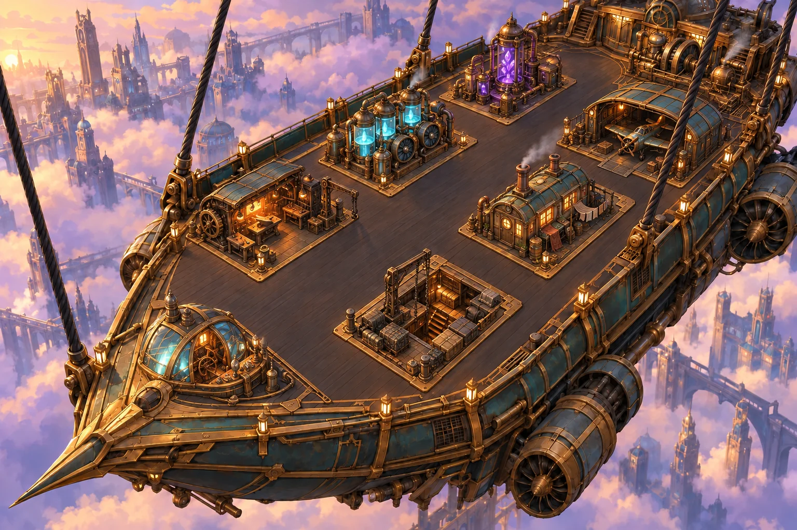

<!doctype html>
<html lang="fr">
<meta charset="utf-8">
<meta name="viewport" content="width=device-width,initial-scale=1">
<title>Zeppelin — L’Audacieux</title>
<link rel="stylesheet" href="zeppelin/interface.css">
<link rel="stylesheet" href="zeppelin/map.css">
<header><div class="brand">ZEPPELIN<small>LES CITÉS DU CIEL</small></div><div class="demo">Prototype visuel · un seul palier graphique</div></header>
<main>
 <div class="heading"><div><div class="eyebrow">Votre vaisseau · secteur 268 | 96</div><h1>L’Audacieux</h1></div><div class="flight"><span class="dot">●</span> En vol stationnaire<br>Au-dessus des Hautes-Cités · altitude 1 840 m</div></div>
 <div class="resources">
  <div class="resource"><span class="gem">⬡</span><div><small>Alliage</small><b id="alloy">8 450</b></div><em>+240 / h</em></div>
  <div class="resource"><span class="gem">◈</span><div><small>Condensat</small><b id="water">6 280</b></div><em>+180 / h</em></div>
  <div class="resource"><span class="gem">◇</span><div><small>Éther</small><b id="ether">3 160</b></div><em>+95 / h</em></div>
  <div class="resource"><span class="gem">⚑</span><div><small>Équipage</small><b>84 <small>/ 120</small></b></div><em>36 places</em></div>
 </div>
 <nav class="view-tabs" role="tablist" aria-label="Navigation du vaisseau"><button class="view-tab" id="deck-tab" role="tab" aria-controls="deck-view" aria-selected="true">◇ Pont principal</button><button class="view-tab" id="map-tab" role="tab" aria-controls="map-view" aria-selected="false">✧ Carte céleste <small>Voyages & collecte</small></button><span class="map-nav-hint">Archipel des Hautes-Cités</span></nav>
 <div class="layout" id="deck-view" role="tabpanel" aria-labelledby="deck-tab">
  <section class="map-panel" aria-label="Plan du zeppelin"><div class="toolbar"><div>PONT PRINCIPAL <span> / 8 modules</span></div><button class="toggle" id="toggle" aria-pressed="false">Voir le pont vide</button></div><div class="scene-scroll"><div class="scene" id="scene"></div></div><div class="map-footer"><span>Sélectionnez un module pour le gérer</span><span>Coque intacte · 100 %</span></div></section>
  <aside class="side"><section class="card" aria-live="polite"><div class="eyebrow" id="category"></div><h2 id="name"></h2><p class="description" id="description"></p><div class="stat"><span>Niveau actuel</span><strong id="level"></strong></div><div class="stat"><span>Fonction</span><strong id="effect"></strong></div><div class="stat"><span>Durée d’amélioration</span><strong>12 min 30 s</strong></div><div class="cost" id="cost"></div><button class="primary" id="upgrade"></button><div class="note">Simulation locale · aucune modification du jeu actuel.</div></section>
  <section class="card crew"><div class="eyebrow">Détachement embarqué</div><h2>Prêts à décoller</h2><div class="crew-row"><span>Fusiliers de pont</span><b>24</b></div><div class="crew-row"><span>Voltigeurs</span><b>12</b></div><div class="crew-row"><span>Éclaireurs aériens</span><b>6</b></div><div class="crew-row"><span>Bombardiers</span><b>2</b></div></section></aside>
 </div>
 <section id="map-view" role="tabpanel" aria-labelledby="map-tab" hidden>
  <div class="map-layout">
   <section class="sky-frame" aria-label="Carte céleste interactive"><div class="toolbar"><div>ARCHIPEL <span> / K02 · 9 îlots</span></div><div class="sky-controls"><button id="map-minus" aria-label="Dézoomer">−</button><button id="map-plus" aria-label="Zoomer">+</button><button id="map-center">Centrer</button></div></div>
    <div class="sky-viewport" id="sky-viewport"><div class="sky-world" id="sky-world"><div class="sky-grid"></div><svg class="sky-route" viewBox="0 0 1200 800" preserveAspectRatio="none" aria-hidden="true"><path id="route-preview" class="route-preview"/><path id="route-live" class="route-live"/></svg><div class="airship idle" id="airship"><span class="airship-sprite" id="airship-sprite"></span><span class="ship-label">L’Audacieux</span></div></div><div class="sky-corner">LES HAUTES-CITÉS<br><span id="map-location">Port d’attache · 264 | 101</span></div><div class="sky-compass">✧<small>N</small></div></div>
    <div class="map-footer"><div class="map-legend"><span style="--legend:#87cdb2">Port</span><span style="--legend:#d8bc80">Ressources</span><span style="--legend:#bc9bd4">Exploration</span></div><span>Glisser pour naviguer · + / − pour zoomer</span></div>
   </section>
   <aside class="map-side"><section class="card"><div class="eyebrow" id="island-type">Destination</div><h2 id="island-name"></h2><p class="description" id="island-description"></p><div class="stat"><span>Coordonnées</span><strong id="island-coordinates"></strong></div><div class="stat"><span>Gisement restant</span><strong id="island-stock"></strong></div><div class="stat"><span>Durée de vol</span><strong id="island-duration"></strong></div><button class="primary map-action" id="map-travel">Mettre le cap</button><button class="map-secondary" id="map-collect">Collecter les ressources</button><div class="travel-progress" role="progressbar" aria-label="Progression de l’action" aria-valuemin="0" aria-valuemax="100" aria-valuenow="0"><span id="map-progress"></span></div><div class="travel-status" id="map-status" role="status" aria-live="polite">Amarré au port. Choisissez votre destination.</div></section>
   <section class="card"><div class="eyebrow">Navigation</div><svg class="minimap" id="minimap" viewBox="0 0 1200 800" role="group" aria-label="Mini-carte : sélectionner un îlot"><rect class="mini-window" id="mini-window" x="8" y="8" width="1184" height="784"/><path class="mini-ship" id="mini-ship" d="M0,-16 L12,12 L0,6 L-12,12 Z"/></svg><form class="goto-form" id="map-goto"><label for="map-x">Aller à</label><input id="map-x" type="number" value="268" min="260" max="290" aria-label="Coordonnée X"><span>|</span><input id="map-y" type="number" value="96" min="88" max="115" aria-label="Coordonnée Y"><button>OK</button></form><p class="map-help">Sélectionnez un îlot, mettez le cap puis collectez à l’arrivée. Votre cargaison rejoint les ressources du pont. Vols accélérés pour cette démonstration.</p></section></aside>
  </div><div class="map-feed"><span id="map-manifest">Cargaison de l’expédition : aucune collecte</span><button class="map-reset" id="map-reset">Réinitialiser l’expédition</button></div>
 </section>
 <div class="log" role="status"><strong>JOURNAL DE BORD</strong><span id="journal">Bienvenue à bord, capitaine. Votre prochaine escale vous attend au-delà des nuages.</span></div>
 <div class="bottom"><span>Direction artistique : peinture 2D / volumes 3D · laiton, éther et brume</span><a href="zeppelin/README.md">Concept & correspondances</a></div>
</main>
<script>
const modules=[
 {id:'moteurs',name:'Salle des machines',old:'Bûcheron',category:'Production · alliage',desc:'Les turbines alimentent la récupération et la refonte des métaux. L’alliage sert à construire et renforcer votre vaisseau.',effect:'+240 alliages / h',level:8,x:86,y:16,w:15},
 {id:'condenseur',name:'Condenseur',old:'Carrière d’argile',category:'Production · condensat',desc:'Captez l’humidité des nuages. Le condensat alimente les circuits de refroidissement et les ateliers du bord.',effect:'+180 condensats / h',level:7,x:49,y:35,w:20},
 {id:'raffinerie',name:'Raffinerie d’éther',old:'Mine de fer',category:'Production · éther',desc:'Distillez les cristaux d’éther pour alimenter vos appareils et équiper vos escadrilles.',effect:'+95 éthers / h',level:5,x:64,y:21,w:17},
 {id:'pilotage',name:'Poste de pilotage',old:'Quartier général',category:'Commandement',desc:'Le cœur de L’Audacieux. Organisez les travaux du pont et dirigez les expéditions depuis la passerelle.',effect:'Construction accélérée',level:10,x:26,y:76,w:23},
 {id:'cale',name:'Cale',old:'Entrepôt',category:'Stockage',desc:'Mettez à l’abri l’alliage, le condensat et l’éther. Une cale plus grande permet de préparer des expéditions plus ambitieuses.',effect:'12 000 par ressource',level:8,x:54,y:68,w:21},
 {id:'atelier',name:'Atelier mécanique',old:'Forge + atelier',category:'Recherche & armement',desc:'Améliorez l’équipement des fusiliers, les coques des chasseurs et les charges de vos bombardiers.',effect:'Recherche d’équipements',level:6,x:34,y:50,w:22},
 {id:'equipage',name:'Quartier d’équipage',old:'Ferme + caserne',category:'Vie à bord & recrutement',desc:'Accueillez votre équipage et recrutez les fusiliers de pont et les voltigeurs nécessaires aux abordages.',effect:'120 places d’équipage',level:7,x:69,y:50,w:21},
 {id:'hangar',name:'Hangar d’escadrille',old:'Écurie',category:'Flotte aérienne',desc:'Préparez vos éclaireurs, chasseurs et bombardiers. Ils partent en reconnaissance, escortent les convois et attaquent les vaisseaux rivaux.',effect:'Recrutement aérien',level:4,x:81,y:32,w:22}
];
const stock=[8450,6280,3160];let selected='pilotage';const scene=document.getElementById('scene');
for(const m of modules){const b=document.createElement('button');b.className='building';b.style.cssText=`--x:${m.x};--y:${m.y};--w:${m.w};--z:${Math.round(m.y)}`;b.dataset.id=m.id;b.innerHTML=`<span class="tag">${m.name} <span class="level"><small>NV</small><b>${m.level}</b></span></span>`;b.addEventListener('click',()=>select(m.id));scene.append(b)}
// Contours de la scène, en pixels de l’illustration 1536 × 1024.
const outlines={
 moteurs:'1200,60 1320,40 1430,105 1390,180 1245,170 1190,135',
 condenseur:'610,255 645,220 675,215 685,190 730,185 740,165 790,155 820,185 855,195 875,280 785,360 700,345 620,300',
 raffinerie:'870,170 915,125 950,115 960,55 980,30 1000,55 1010,110 1050,100 1090,140 1105,180 985,235 890,205',
 pilotage:'230,690 265,625 300,590 315,560 340,560 360,590 420,620 470,675 525,710 565,750 470,795 325,770 245,740',
 cale:'640,635 740,550 750,505 815,475 855,490 890,535 990,590 1000,620 830,750 710,690',
 atelier:'350,430 390,355 500,315 575,340 590,370 645,375 680,440 520,530 390,490',
 equipage:'895,430 955,360 995,355 995,300 1015,290 1025,340 1060,315 1080,315 1080,340 1130,355 1150,400 1200,425 1185,470 1060,525 950,490',
 hangar:'1080,260 1100,215 1140,170 1205,160 1285,180 1365,235 1380,300 1320,350 1180,320'
};
const ns='http://www.w3.org/2000/svg';const overlay=document.createElementNS(ns,'svg');overlay.setAttribute('viewBox','0 0 1536 1024');overlay.classList.add('scene-overlay');overlay.setAttribute('aria-hidden','true');
const defs=document.createElementNS(ns,'defs');overlay.append(defs);
for(const m of modules){const clip=document.createElementNS(ns,'clipPath');clip.id=`clip-${m.id}`;const polygon=document.createElementNS(ns,'polygon');polygon.setAttribute('points',outlines[m.id]);clip.append(polygon);defs.append(clip);const group=document.createElementNS(ns,'g');group.classList.add('module-light');group.dataset.module=m.id;const art=document.createElementNS(ns,'image');art.setAttribute('href','zeppelin/assets/pont-modules-v2.webp');art.setAttribute('width','1536');art.setAttribute('height','1024');art.setAttribute('clip-path',`url(#clip-${m.id})`);group.append(art,polygon.cloneNode());overlay.append(group);const button=scene.querySelector(`[data-id="${m.id}"]`);const light=on=>group.classList.toggle('hovered',on);button.addEventListener('pointerenter',()=>light(true));button.addEventListener('pointerleave',()=>light(false));button.addEventListener('focus',()=>light(true));button.addEventListener('blur',()=>light(false));}
scene.append(overlay);
function costs(m){return [Math.round(280*1.2**m.level),Math.round(180*1.2**m.level),Math.round(90*1.2**m.level)]}
const fmt=n=>n.toLocaleString('fr-FR');
function select(id){selected=id;const m=modules.find(x=>x.id===id);document.querySelectorAll('.building').forEach(b=>{const on=b.dataset.id===id;b.classList.toggle('selected',on);b.setAttribute('aria-pressed',on);const item=modules.find(x=>x.id===b.dataset.id);b.setAttribute('aria-label',`${item.name}, niveau ${item.level}`)});document.getElementById('category').textContent=m.category;document.getElementById('name').textContent=m.name;document.getElementById('description').textContent=m.desc;document.getElementById('level').textContent=`Niveau ${m.level}`;document.getElementById('effect').textContent=m.effect;document.getElementById('detail-art').src=`zeppelin/assets/${m.id}-detail-v2.webp`;document.getElementById('detail-art').alt=m.name;const c=costs(m);document.getElementById('cost').innerHTML=c.map((n,i)=>`<span>${['⬡','◈','◇'][i]} ${fmt(n)}</span>`).join('');const upgrade=document.getElementById('upgrade');upgrade.disabled=c.some((n,i)=>n>stock[i]);upgrade.textContent=upgrade.disabled?'Ressources insuffisantes':`Améliorer au niveau ${m.level+1}`}
document.getElementById('toggle').addEventListener('click',e=>{const empty=scene.classList.toggle('empty');document.querySelector('.backdrop').src=empty?'zeppelin/assets/pont-v2.webp':'zeppelin/assets/pont-modules-v2.webp';e.currentTarget.setAttribute('aria-pressed',empty);e.currentTarget.textContent=empty?'Afficher les modules':'Voir le pont vide'});
document.getElementById('upgrade').addEventListener('click',()=>{const m=modules.find(x=>x.id===selected);const c=costs(m);if(c.some((n,i)=>n>stock[i]))return;c.forEach((n,i)=>stock[i]-=n);m.level++;['alloy','water','ether'].forEach((id,i)=>document.getElementById(id).textContent=fmt(stock[i]));document.querySelector(`[data-id="${m.id}"] .tag b`).textContent=m.level;document.getElementById('journal').textContent=`Simulation : ${m.name} passe au niveau ${m.level}. Les ressources ont été déduites ; le visuel reste identique.`;select(m.id)});
select(selected);
</script>
<script src="zeppelin/city-navigation.js"></script>
<script src="zeppelin/map.js"></script>
</html>
